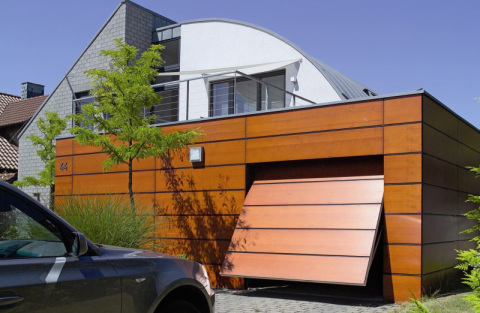
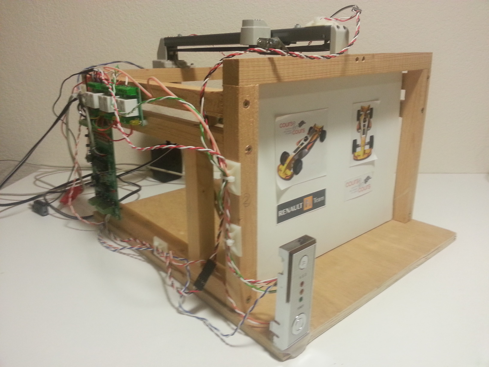

Sciences de l'ingénieurOuvre Porte Basculante de Garage |
 |
La porte de garage manuelle nécessite que l'utilisateur :
Ce système doit s'adapter aux principaux différents modèles de portes de garage basculantes qui existent sur le marché actuel et s'alimenter sur l'énergie électrique du réseau domestique.
La partie opérative du système doit :
La partie commande du système doit gèrer l'ouverture et la fermeture automatique de la porte en réponse aux ordres donnés par l'utilisateur:
Dans un premier temps, il s'agit de mener une étude cinématique afin de confirmer qu'un actionneur de type chariot en translation linéaire par rapport à un rail fixé sur le plafond du garage tel que le système SOMMER Sprint 550S présent dans le laboratoire de SI, est bien adapté pour manoeuvrer les mécanismes classiques de portes de garage.
Ensuite, il faudra imaginer une logique de commande programmée répondant au cdcf et la valider par expérimentation sur la maquette de garage à échelle réduite du laboratoire de SI. Sur cette maquette le traitement de l'information est réalisée par une carte Arduino UNO.
|

|
|
Mener une simulation de ce mécanisme à l'aide de SolidWorksMotion afin de valider votre construction graphique : PorteDeGarageSolidWorks.zip
Citer et représenter par un schéma d'autres mécanismes de porte de garage qui pourraient être automatisés par le kit de motorisation Sprint 550S de la marque SOMMER présenté par sa notice ci-dessous...
A partir du tableau de connexion des entrées et sorties de la maquette à la carte arduino, imaginer et tester un programme répondant au cdcf :
| Entrées | Sorties | |||||||||||||||
|---|---|---|---|---|---|---|---|---|---|---|---|---|---|---|---|---|
|
|
|
Avant de programmer, pour décrire et analyser clairement le comportement séquentiel d'un système, il est très utile de réaliser un diagramme d'état :

Après avoir réalisé un diagramme d'état pour décrire le fonctionnement attendu pour la porte de garage, compléter le programme du fichier ProgrammeOuvrePorteBasculante.sb2 avec mBlock et valider sur la maquette expérimentale...